Introduction
Zhe Wei is a mechanical engineer specialising in composite materials. He is currently pursuing an MSc in Composites at Imperial College London, previously graduating with a BEng in Mechanical Engineering at University of Sheffield. With a range of experiences ranging between aerospace and biomedical technologies, Zhe Wei has developed a keen interest in understanding more about democratising the adoption of new material technologies for lightweight structures. His experience includes thermoplastic composite materials research and development for avionics applications, developing new structural solutions for electric vertical takeoff and landing (eVTOL) aircraft, and optimising development times for additively manufactured titanium triply periodic minimal surface (TPMS) structures. With composites, Zhe Wei has demonstrated breakthroughs with using CF/PPS and CF/PA12 thermoplastic composite laminates for avionics applications for future commercial aircraft. With eVTOL aircraft, he's co-led the design of a 3.2-meter wingspan carbon fibre (CF) composite drone, constructed using carbon fibre honeycomb core sandwich structure and foam-core. He's also developed a lightweight 20-meter payload deployment system controlled via serial connection using RPI4. With additively manufactured TPMS structures, he's automated the optimisation process for orthopaedic implants, to achieve reduced revision surgery and therefore potential savings of over £2 billion pounds for the NHS. As a strong advocator for making STEM education more accessible, Zhe Wei is passionate about empowering the leaders of tomorrow and ensuring equity in opportunities in engineering. He has been involved in numerous student organisations, namely the Malaysian Engineering Student Association (MESA) and Young Malaysian Engineers (YME). Beyond the weekdays, Zhe Wei is an avid runner and has completed four half-marathons to date. He hopes to complete the full TCS marathon tour in the future.
Resources
📄 resume / cv 📄 undergraduate thesis 📄 postgraduate thesis 📄 website documentation
Experience
Zhe Wei Kho This portfolio provides a detailed overview of my professional work experience, which spans various industries and roles. Access to the digital version of this portfolio is available at https://zhewei-k.github.io.
Enterprise Operations Intern
2025 / DJI DronesKaki / Enterprise Operations Intern
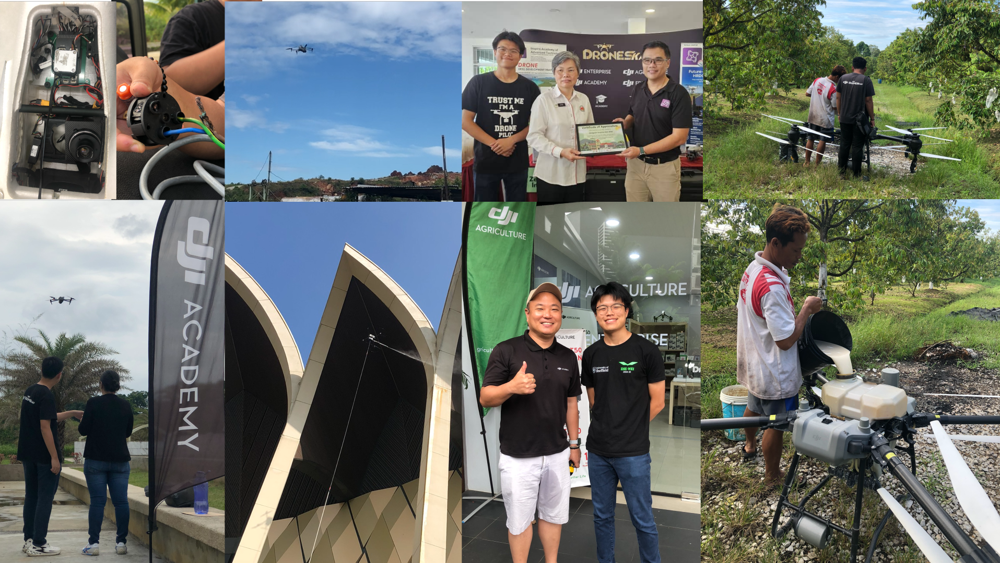
Undergraduate Researcher
2024 / INSIGNEO Institute / Undergraduate Researcher
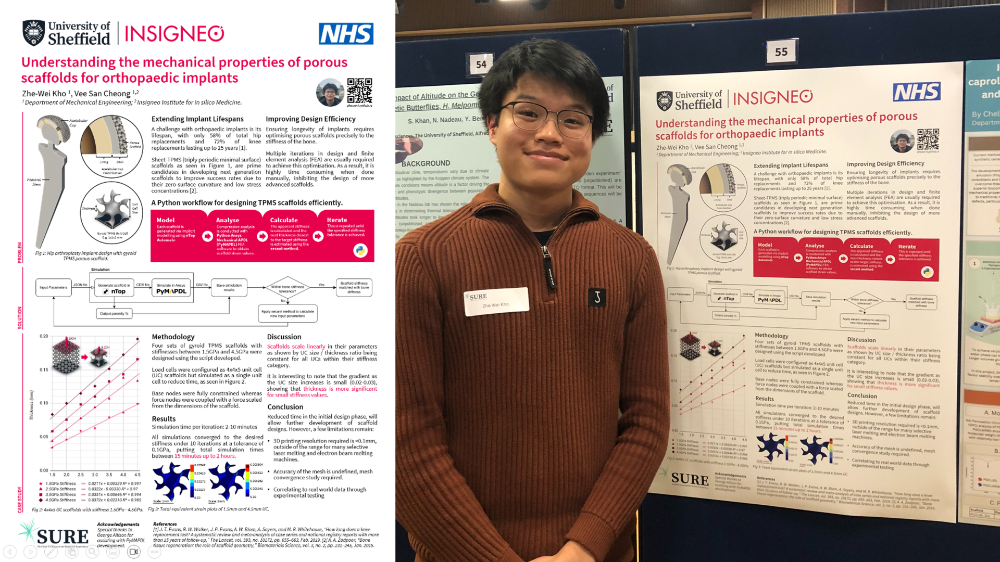
Structural Engineering Intern
2022 / 2H Offshore / Structural Engineering Intern
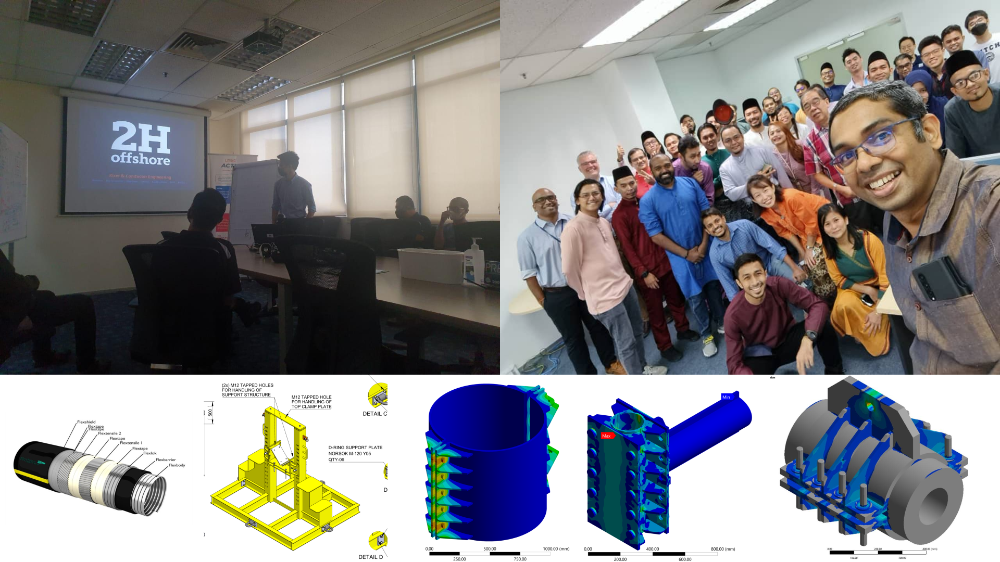
Projects
Zhe Wei Kho This project portfolio showcases a selection of work, spanning from undergraduate to postgraduate research, as well as student-led initiatives. Each project highlights contributions, methodologies, and outcomes. Further information on each project is available through the provided links to reports and documentation. Access to the digital version of this portfolio is available at https://zhewei-k.github.io.
Composite Shielding
2026 / Imperial College London / Dissertation
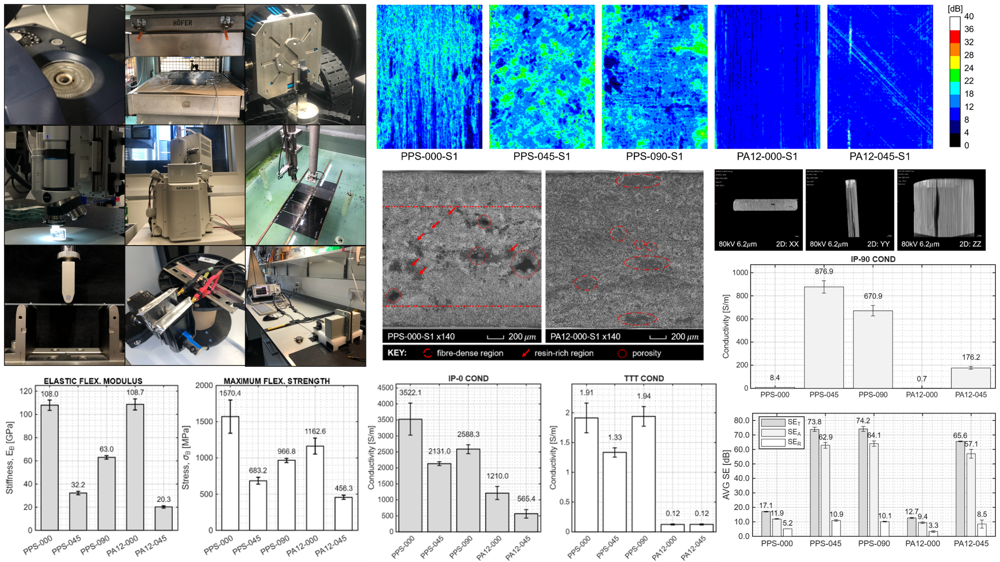
Carbon fibre polyphenylene sulphide (CF/PPS) and carbon fibre polyamide-12 (CF/PA12) are high-performance thermoplastic composites evaluated as lightweight, durable replacements for aircraft aluminium. However, replacing metal airframes requires ensuring these composites reliably shield critical avionics from electromagnetic interference. This study evaluates how material choice, laminate architecture, and processing defects govern electrical conductivity and S-band shielding effectiveness. Phase 1: Manufacturing & Microstructural Inspection
- Consolidate CF/PPS and CF/PA12 prepregs into unidirectional, cross-ply, and quasi-isotropic panels using a hydraulic hot press.
- Map internal porosity and voids using 10 MHz ultrasonic C-scans and 3D micro-computed tomography (μCT).
- Analyse fibre alignment, resin distribution, and cut-edge quality via optical and scanning electron microscopy (SEM).
- Determine longitudinal flexural strength and stiffness via three-point bending tests.
- Measure in-plane and through-thickness bulk electrical conductivities using a 4-wire DC resistance setup.
- Measure S-band (2.2–3 GHz) shielding effectiveness components using WR340 rectangular waveguides and a vector network analyser.
Composite Aircraft Seat
2026 / Imperial College London / Module Project
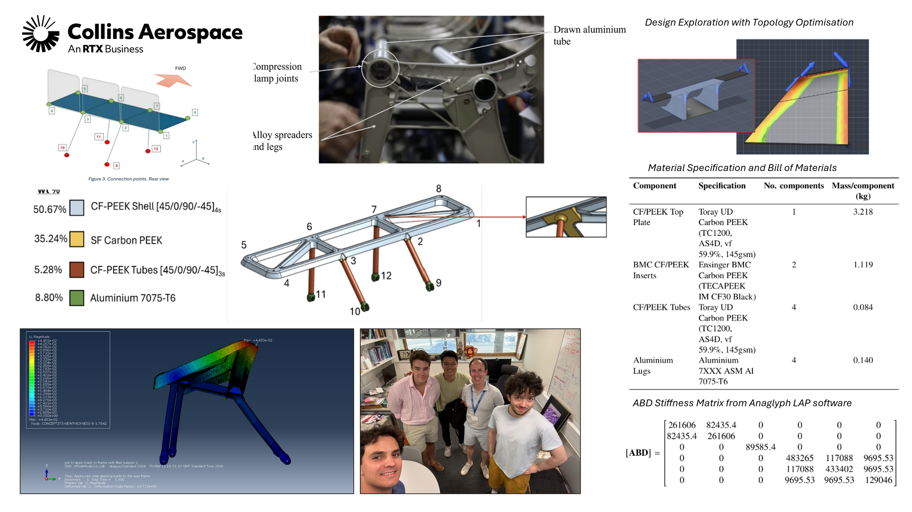
Conventional economy aircraft seat frames are primarily constructed from aluminium alloys, which are lightweight and easily processed into complex profiles using scalable metalworking techniques. However, driven by green aviation initiatives to reduce operational fuel consumption and carbon emissions, there is a strong demand for further structural weight reduction. Directly substituting metal components with composite materials introduces significant design challenges, as traditional tube-clamping methods and mechanical fasteners induce localized stress concentrations, fiber damage, and bearing failures in composite laminates. To resolve these assembly limitations, this project presented a composite-first seat frame design that eliminates reliance on mechanical fasteners through integrated structural geometries and advanced bonding methods. The proposed architecture utilized carbon fiber-reinforced PEEK (CF-PEEK) laminates and short fibre material manufactured by compression moulding, injection moulding, and pulwinding process by existing industrial partners. To verify and compare the concept design, finite element analysis was therefore conducted in ABAQUS CAE to evaluate multi-axial stress states and failure criteria under standard 16g forward crash loading conditions (ETSO-C127 / 14 CFR 25.562), using the Tsai-Hill failure criteria and deflection limits under a 1.5 safety factor. The resulting composite seat frame achieved a total mass of 6.19 kg, with 91% of the weight comprising composite materials. This is a 51% reduction in mass compared to the aluminium baseline (12.61 kg), and due to these weight savings, a theoretical analysis on replacing the seats was found to contribute to a return on investment of 1.84 years. Finally, FEA showed that the composite seat frame designed could effectively sustain the multi-axial loads, therefore meeting the 16g performance requirement. This project was undertaken in collaboration with Collins Aerospace.
Structural Health Monitoring
2026 / Imperial College London / Module Project
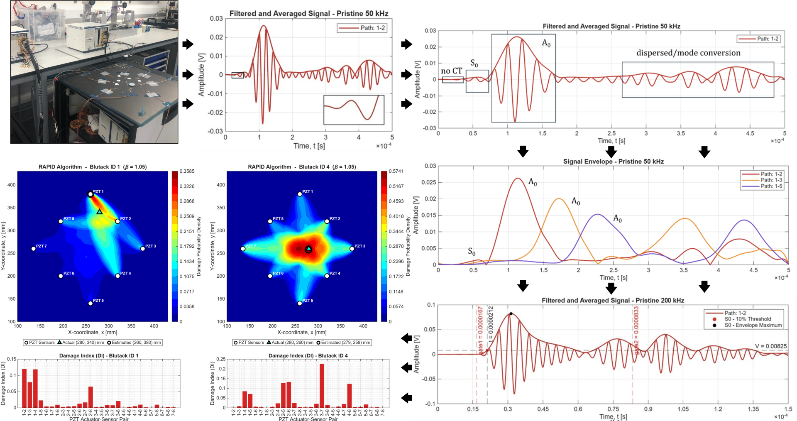
Detecting structural defects in composite aircraft panels via structural health monitoring (SHM) hinges on precision processing of ultrasonic guided waves. However, factors such as wave attenuation, boundary dispersion, and mode conversion significantly complicate damage identification within quasi-isotropic carbon-fibre laminates. Consequently, implementing automated solutions for signal filtering, mode characterisation, and probability-mapped defect imaging through piezoelectric transducer networks is vital. Methodology:
- Acquire 50 kHz and 200 kHz Lamb wave signals using PZT transducer pairs on a carbon-fibre plate
- Filter environmental noise using a 4th-order Butterworth band-pass filter and signal averaging
- Isolate A0 and S0 wave packets using Hilbert transform envelopes and gated thresholding
- Calculate directional group velocities and generate polar slowness graphs
- Localise damage using a modified RAPID algorithm with Signal Sum of Squared Difference (SSSD) damage indices
Mechanical Testing
2026 / Imperial College London / Module Project
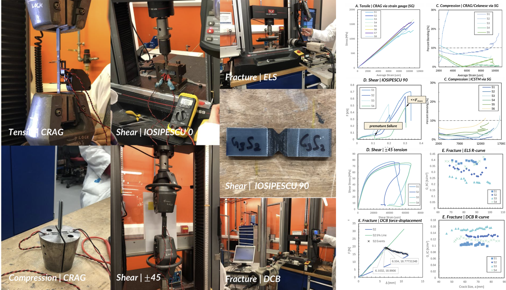
Comparative evaluation of standardized mechanical test methods was applied to unidirectional (UD) carbon fibre reinforced polymer (PMC) composites. Standardised procedures often face challenges with UD laminates due to their high axial stiffness, weak transverse response, and anisotropic failure modes, leading to variations in reported properties across different standards and test fixtures. Consequently, this study evaluates how variations in fixture design, data-reduction methodologies, and specimen geometry affect the measured tensile, compressive, shear, flexural, and fracture toughness properties of a benchmark aerospace composite system. Material: T300/914 carbon fibre/epoxy matrix unidirectional composite prepreg (Toray TORAYCA T300 6k carbon fibre with Hexcel HexPly 914 matrix; lamina thickness ~0.125 mm). Methodology:
- Tensile: Modified CRAG RAE 300 on [0]16 coupons.
- Flexural: Three-Point Bending (ASTM D790-17) and Four-Point Bending (ASTM D6272-25).
- Compression: Celanese pure shear loading (CRAG RAE 400 / ASTM D3410M-16) vs. ICSTM combined loading (BS EN ISO 14126:2023 / ASTM D6641M-23)
- Shear: Iosipescu V-Notched Beam (ASTM D5379M-19e1) on [0]24 panels, ±45° Tension (ASTM D3518M-18) on [+45/-45/-45/+45]s coupons, and Short Beam Shear (ASTM D2344M-22).
- Fracture Toughness: Mode I Double Cantilever Beam (ASTM D5528-21) and Mode II End-Loaded Split (BS EN ISO 15114:2014).
Optimisation Framework
2025 / University of Sheffield / Dissertation
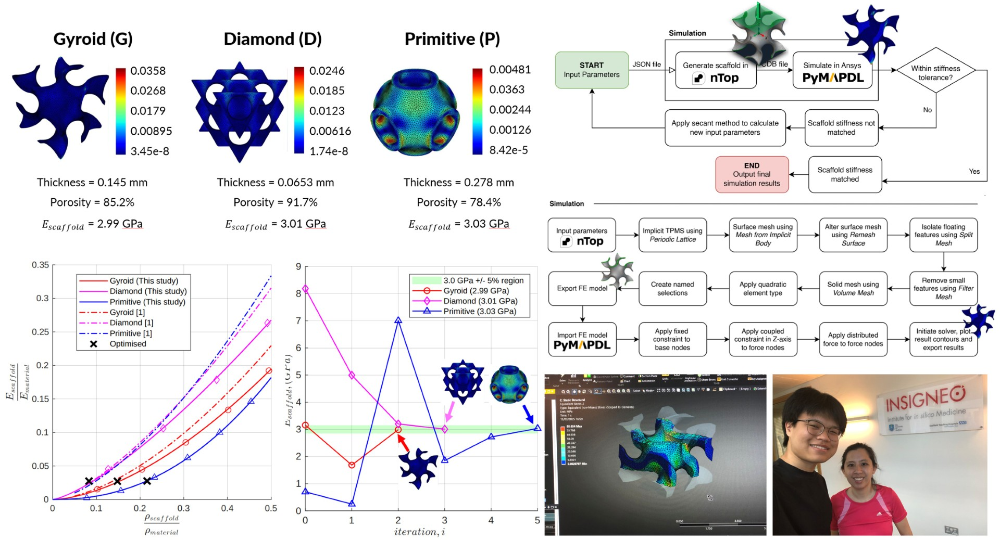
Porous scaffolds are applicable to many areas, from crash structures to medical implants, achieving the desired mechanical properties is a fine balance. Three out of every ten patients face complications in the 25 years after surgery in the UK [1] [2]. In fact, younger patients have a 3-5 time higher risk [3]. As a result, it is important to automate the manual, expensive, and slow optimisation process additively manufactured titanium porous scaffolds. Methodology:
- Model using nTop Automate 5.16.2
- Analyse scaffold using Ansys Mechanical 2024 R2 via PyMAPDL 0.68.2
- Optimise using secant numerical method
- Export data using custom Python logger
- Visualise using MATLAB
Composite Fairing
2025 / RideCanada4MS / Student-led Project
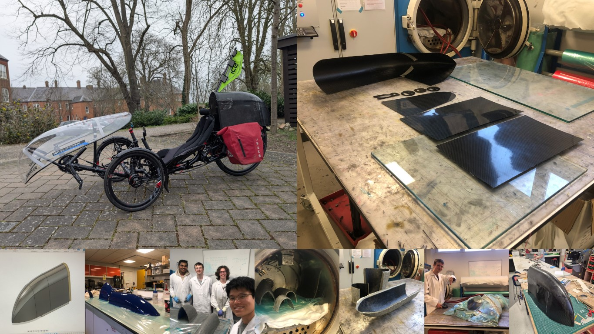
We were tasked by RideCanada4MS, a charity aiming to raise £1,000,000 for multiple sclerosis (MS) research to develop measures to improve the efficiency of a recumbent trike. Over three months, through consultation sessions with the client and after several design reviews, a rear fairing was decided as the best approach with a maximum weight of 1kg. Lightweighting initiatives for mounts and fixtures were also done. My role included overseeing the design and manufacturing of the fairing by ensuring performance and H&S requirements were met. One of the major decisions I had to make was on the layup process. Since the finished product had to be light, pre-pregnated carbon fibre laminate (prepreg) was the choice we decided to go with. This involved custom moulds that had to be manufactured with a glass fibre-matrix compound due to its resistance to high temperatures. In the end, we were able to achieve a total weight of ~400 grams, 60% lower than the target mass. The RideCanada4MS journey has been covered on the BBC.
Autonomous Drone
2024 / Project Hex / Student-led Project
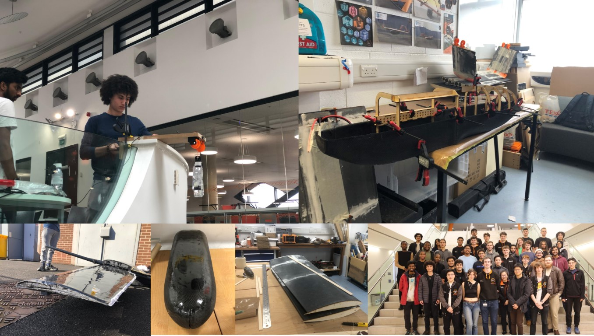
For the SUAS 2024 competition in Maryland, USA, Project Hex set out to design Vulcan V3, a 3.2-metre wingspan vertical take-off and landing (VTOL) drone capable of transitioning into horizontal flight. The primary structural challenge was to reduce the maximum takeoff weight (MTOW) from 22 kg to 18 kg to extend operational range beyond five miles, simplify manufacturing and assembly, improve internal access to the fuselage, and increase the accuracy of medical payload delivery from an altitude of 100 feet. As the Lead Structural Design Engineer, the role involved adopting a composites-first approach to redesign the airframe and payload mechanisms. This included leading the structural transition to a new carbon/epoxy composite sandwich monocoque fuselage and redesigning the wing/tail structures. Responsibilities spanned initial analytical sizing, numerical FEA simulations in Ansys Mechanical for static and dynamic vibration cases, overseeing additively manufactured moulds, and leading the development and safety compliance of a custom Arduino-controlled payload winch system. As a result, the following were achieved:
- Engineered a carbon/epoxy aramid honeycomb sandwich monocoque fuselage to maximize structural stiffness while simplifying internal access for avionics integration.
- Designed and manufactured carbon fiber composite wings and tail sections utilizing XPS polystyrene foam cores to maintain precise aerodynamic curvature.
- Developed and iterated a winch deployment system featuring a custom brake-disk mechanism for reliable payload delivery.
- Executed nearly 30 drop-test validation runs from a height of 25 metres over three prototype iterations while coordinating with Health & Safety to establish IOSH-compliant SOPs.
Gearbox
2024 / University of Sheffield / Module Project
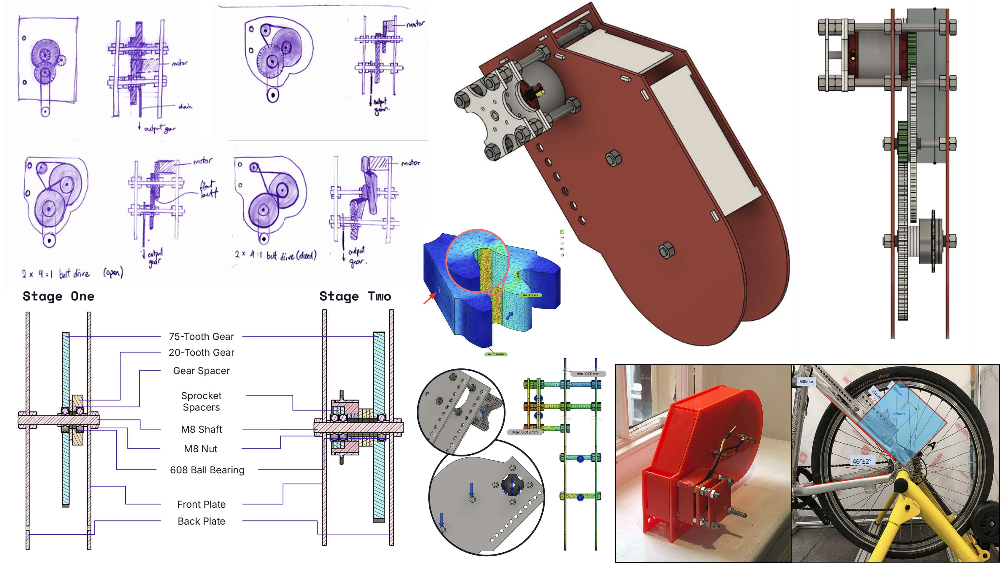
Led a team to design a gearbox for accelerating a bike up to 15mph / 24.94kph with a maximum power consumption of 250W, in accordance with EAPC UK regulations. This included calculations, designing and FEA simulations on the gears, bearing assembly and motor mount. After iterating and prototyping on our CAD design, the components were finally manufactured by laser-cutting out of 600x400 3mm acrylic. The product was then assembled with M8 nuts, threaded rods, and self-lubricated bearings and completed by attaching a sprocket assembly. To address the complex assembly, design for ease of assembly was made one of the key criteria from the start. A similar approach was made when exploring mounting methods and optimising the gearbox for maximum power. As a result, this allowed us to position top 1% in the cohort on overall efficiency.
UV Light Device
2024 / University of Sheffield / Module Project
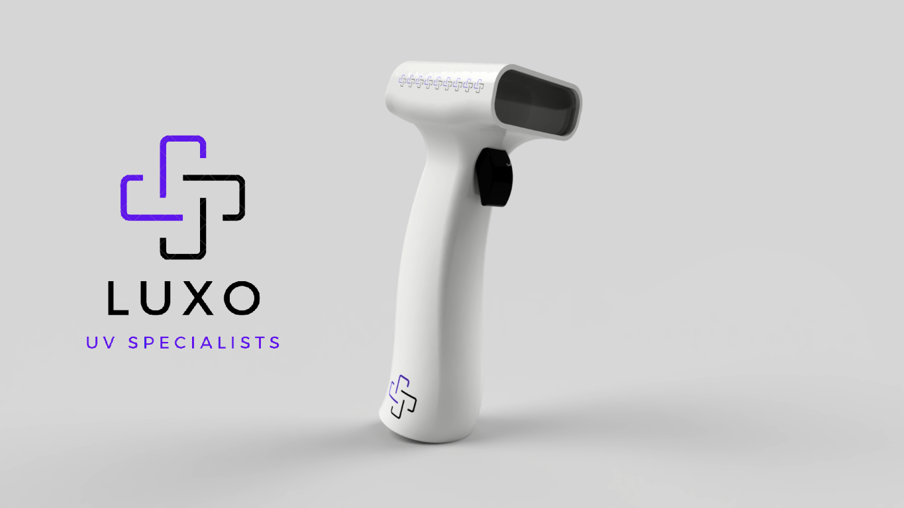
In 2017, around 102,000 knee replacements and 91,000 hip replacements were conducted in the UK and Eire [1]. The annual demand for hip and knee replacements is projected to increase by 174% and 673% respectively [2] [3]. The aim of this product was to reduce the number of prosthetic joint infections by 50% within a year after NHS implementation. To tackle this, we developed the LUXO concept, a handheld UV light device specifically designed for surgical applications. Features:
- Non-carcinogenic: 222 nm UVC light
- Point-and-Click: 19.5 deg FOV for 10 seconds at 30 cm distance
- Wireless Charging: easy to clean